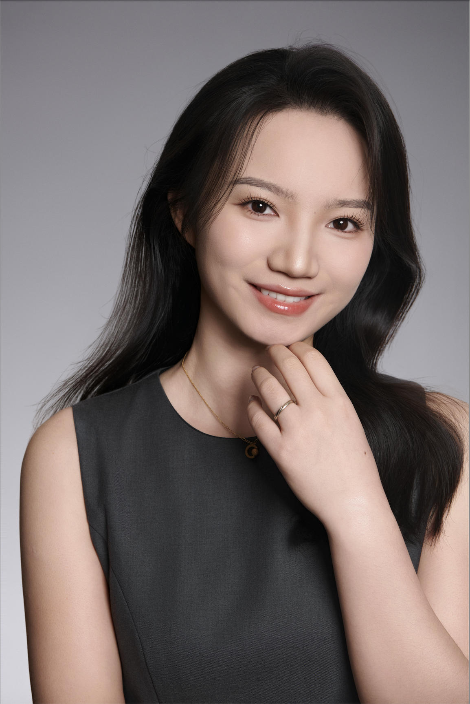

|
 |
Yu ZhangPh.D. in Computer Science and Engineering
The Chinese University of Hong Kong |
I graduated with a Ph.D. in Computer Science and Engineering from The Chinese University of Hong Kong (CUHK) in July 2026, advised by Prof. Bei Yu.
I also worked as a research intern at NVIDIA Research, focusing on LLM/VLM hallucination detection.
My research interests are efficient and reliable LLM training/inference, agentic EDA, and software/hardware co-design.
Besides research, I love swimming and hiking in my spare time.
LLM Agent and Reasoning: [C12, C13, C14]
LLM Efficiency: [C9, C10, C11]
EDA: [C4, C5, C6, C7, C8, J2]
[C14] Jenny Zhang, NVIDIA Cosmos Team, “Cosmos 3: Omnimodal World Models for Physical AI”, NVIDIA Technical Report, Technical Report.
[C13] Yu Zhang, Peter Belcak, Shizhe Diao, Yonggan Fu, Shaona Ghosh, Morteza Mardani, David Austin, Eileen Long, Bei Yu, Pavlo Molchanov, “PROBE: PROcess-Based BEnchmark for Hallucination Detection”, Findings of the Association for Computational Linguistics (ACL).
[C12] Peter Belcak, Yu Zhang, Shizhe Diao, David Austin, Yonggan Fu, Ryan Angilly, Yingyan Celine Lin, Eileen Long, Pavlo Molchanov, “HallucinationHunter: Fine-Grained Factual Grounding of Generated Text”, ICLR 2026 Workshop Reliable Autonomy.
[C11] Yu Zhang, Hui-Ling Zhen, Mingxuan Yuan, Bei Yu, “MOSS: Efficient and Accurate FP8 LLM Training with Microscaling and Automatic Scaling”, International Conference on Learning Representations (ICLR).
[C10] Yu Zhang, Mingzi Wang, Lancheng Zou, Wulong Liu, Hui-Ling Zhen, Mingxuan Yuan, Bei Yu, “MixPE: Quantization and Hardware Co-design for Efficient LLM Inference”, arXiv.
[C9] Yu Zhang, Hui-Ling Zhen, Zehua Pei, Yingzhao Lian, Lihao Yin, Mingxuan Yuan, Bei Yu, “DiLA: Enhancing LLM Tool Learning with Differential Logic Layer”, ACM Conference on Knowledge Discovery and Data Mining (KDD).
[C8] Yu Zhang, Hui-Ling Zhen, Mingxuan Yuan, Bei Yu, “DiffSAT: Differential MaxSAT Layer for SAT Solving”, IEEE/ACM International Conference on Computer-Aided Design (ICCAD).
[C7] Yuan Pu, Fangzhou Liu, Yu Zhang, Zhuolun He, Kai-Yuan Chao, Yibo Lin, Bei Yu, “Lesyn: Placement-aware Logic Resynthesis for Non-Integer Multiple-Cell-Height Designs”, ACM/IEEE Design Automation Conference (DAC).
[C6] Yu Zhang, Yuan Pu, Fangzhou Liu, Peiyu Liao, Kai-Yuan Chao, Keren Zhu, Yibo Lin and Bei Yu, “Multi-Electrostatics Based Placement for Non-Integer Multiple-Height Cells”, International Symposium on Physical Design (ISPD).
[C5] Yu Zhang, Wei Lin, Sisi Chen, Qingyu Song, Jiaxun Lu, Yunfeng Shao, Bei Yu and Hong Xu, “Fed2Com: Towards Efficient Compression in Federated Learning”, International Conference on Computing, Networking and Communications (ICNC).
[C4] Yu Zhang, Yifan Chen, Zhonglin Xie, Hong Xu, Zaiwen Wen, Yibo Lin and Bei Yu, “LRSDP: Low-rank SDP for Triple Patterning Lithography Layout Decomposition”, Design Automation Conference (DAC).
[C3] Xudong Wang, Guoming Tang, Yi Wang, Srinivasan Keshav, Yu Zhang, “Evsense: A robust and scalable approach to non-intrusive ev charging detection”, ACM International Conference on Future Energy Systems (e-Energy).
[C2] Yu Zhang, Guoming Tang, Qianyi Huang, Yi Wang, Hong Xu, Xudong Wang, “More Behind Your Electricity Bill: a Dual-DNN Approach to Non-Intrusive Load Monitoring”, IEEE International Conference on Cyber, Physical and Social Computing (CPSCom).
[C1] Yu Zhang, Guoming Tang, Qianyi Huang, Kui Wu, Yangjing Wu, Yi Wang, “Investigating Low-Battery Anxiety of Mobile Users”, IEEE International Conference on Cyber, Physical and Social Computing (CPSCom).
[J2] Jiahao Xu, Yuan Pu, Yu Zhang, Fangzhou Liu, Wenjian Yu, Kai-Yuan Chao, Bei Yu, “Easyn: Resynthesis and Legalization Joint NIMCH Design Placement”, IEEE Transactions on Computer-Aided Design of Integrated Circuits and Systems (TCAD).
[J1] Yu Zhang, Guoming Tang, Qianyi Huang, Yi Wang, Kui Wu, Keping Yu, Xun Shao, “FedNILM: Applying Federated Learning to NILM Applications at the Edge”, IEEE Transactions on Green Communications and Networking (TGCN).
“一种基于模型松弛的大模型新微调方法”, 92056131CN01.
Research Intern, NVIDIA Research, Santa Clara, U.S., Sep 2025 - Feb 2026
Topic: Efficient Large Language Model, LLM Hallucination Detection
Research Intern, Huawei Noah's Ark Lab, HKSAR, Aug 2023 - Aug 2024
Topic: Hardware/software co-design for efficient LLM inference; Differential solver layer for LLM
Research Assistant, The Chinese University of Hong Kong, HKSAR, Nov 2021 - Jul 2022
Topic: Communication-efficient and convergence fast federated learning
Research Intern, Microsoft Research Asia, Beijing, P.R. China, Jan 2021 - Aug 2021
Topic: AISimulator
Ph.D. Computer Science and Engineering, The Chinese University of Hong Kong, Aug 2022 - Jul 2026
B.S. Statistics, Central South University, Sept 2015 - Jun 2019
TNNLS, TCAD, TODAES, TGCN, VLSIJ
ICML, ICLR, NeurIPS, ISPD, ASPDAC, KDD